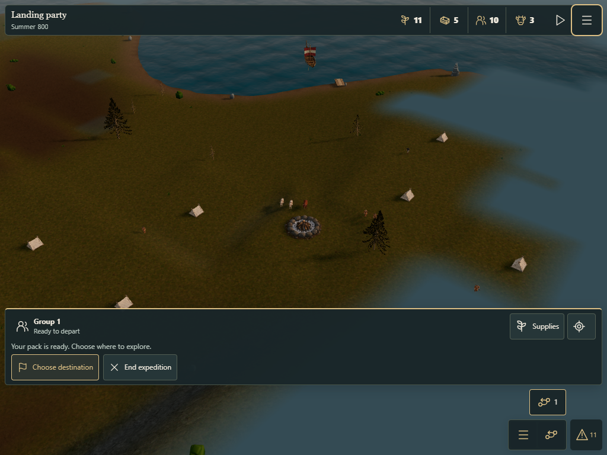
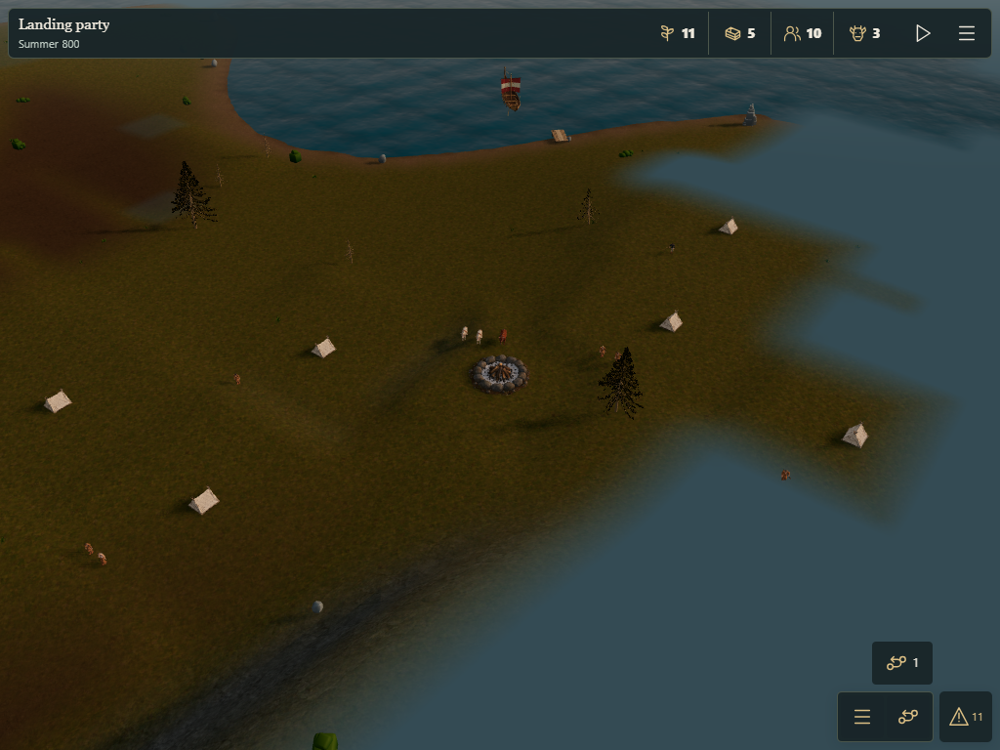
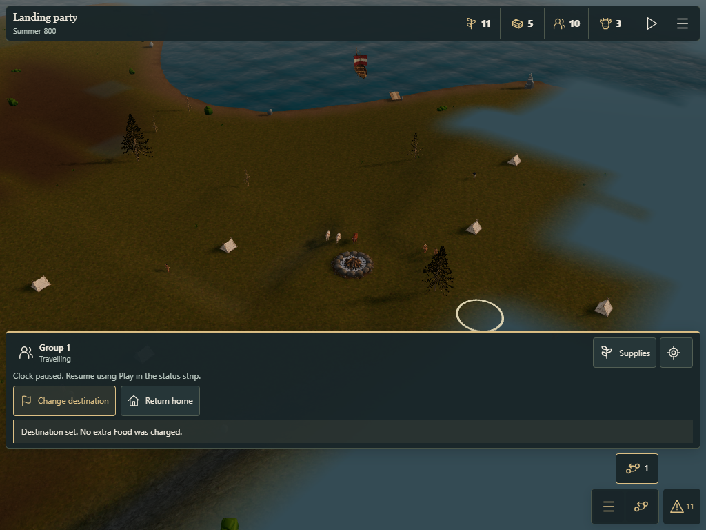

Open your settlement · Validation report · Browser results
Latest: seed-32 rival visibility and eight-direction movement
Starting a new expedition still requires confirmation of the Food cost. New destinations do not buy another pack. The existing safe-return rules are preserved.
Before departure, open Expeditions, choose the home group and expand Test supplies. Food per resident (test) accepts 1–10, with the normal default of 2. Prepare expedition shows the exact total before spending. Three residents taking 8 each cost 24 Food. Each Food provides the existing 250 active ticks; ten per resident is the maximum.
The choice applies to the next paid departure. Existing away groups keep their purchased pack. Test-supplies validation



Browser touch emulation covers phone, tablet and desktop layouts. Physical iPad UAT remains open.